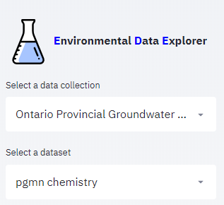
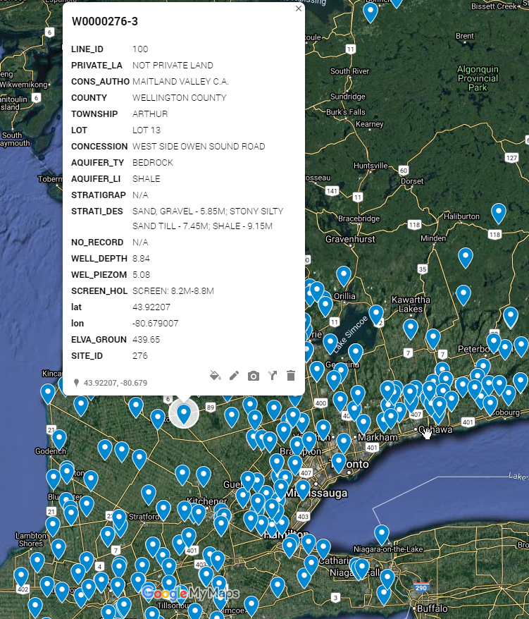
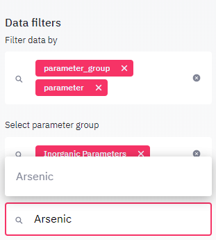
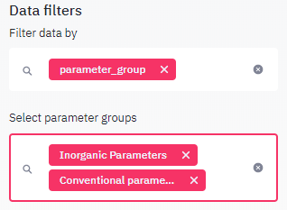
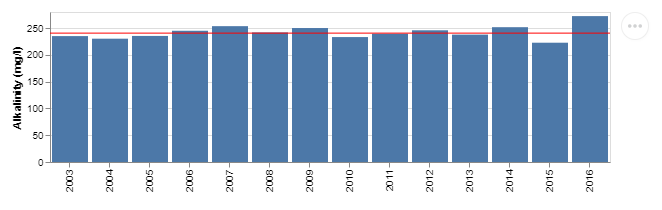
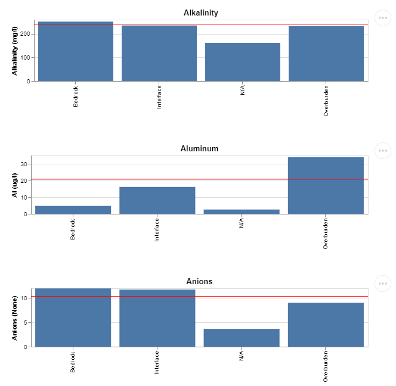
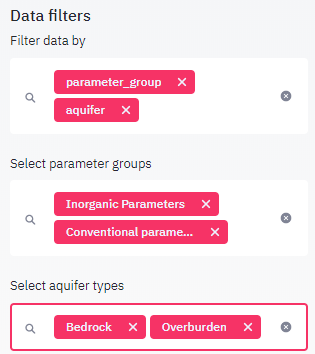
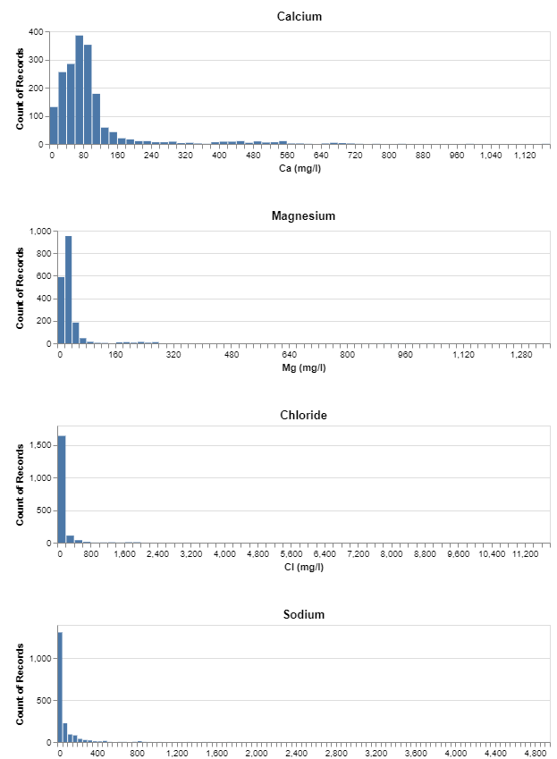
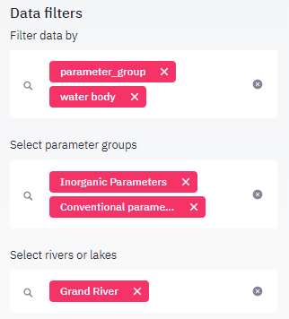
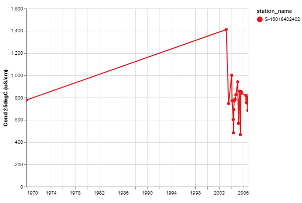

Tutorials¶
Tutorial 1: Exploring a data collection¶
Introduction¶
This tutorial will guide you through the workflow of discovering a data collection using EDE. It is based on the Ontario Provincial Groundwater Monitoring Network (PGMN) data and aims at getting an overview on this data collection. The second and third tutorials will cover the steps to take to look specifically at the data for a set of wells or a single a well of interest.
When opening EDE, PGMN should already be the first item in the listbox, otherwise select it from the data collection list box.

Information on the data collection¶
By default, the first menu item Info is selected. On the view panel you will find a overview on the data collection comprising an introductary text and a list of links, related to the data. The info menu provides a summary on what to expect from the selected data collection, for example: how many parmeters were measured, how many stations were sampled, how many years of data are available. For the Provincial Groundwater Monitoring Network (PGMN) data collection you will find the following: an introductionary text, metadata from the owner (Ontario.ca), a list of links with additional information on the data collection and metadata for two datasets included in this collection: water quality (chemistry) data and water levels.
Information on stations¶
Clicking on the Stations info menu item will show specific information on the stations included in the current dataset. You find again the number of all stations in the title above the first data table. The data table holds all information on the stations as well as on the number of samples taken at each station and on the timeframe the sample were collected. The table may be downloaded using the link below the table. You may also enlarge the table using by clicking in the upper right corner of the table. Below the table a map plot showing the position of all stations is shown. Below the map, you find an additional link to a googlemap site, showing the same dataas in the map above in a more interactive way and with a high resolution satellite backgroundimage. Google map also allows to measure distances and add lines and markers.

The PGMN network has a second dataset with water levels, this second dataset can be activated by selecting the Water levels menu item from the Select a dataset selectbox. It can then be explored in the same way as the water quality. The station names are largely identical with the water quality sampling stations explored in the previous step. Nearly all wells are equipped with a piezometer. Wells with names such as W0000114-2/3/4 have multiple pizometer at different depth intervals.
Information on analysed parameters¶
Return to the ede page and click on the parameters menu item. A single page with all parameters having at least one observation in the dataset is shown. The minimum, maximum and average value as well as the number of observations and sampling years are shown. It can be noted, that most organic parameters and pesticides have been sampled only once at most stations whereas most inorganic parameters where sampled yearly. In order to focus on specific parameter groups and parameters during an analysis, you may filter the parameter displayed in the viewport using the data filters on the sideboard. For example to gain more insight in the parameter arsenic, enable both the parameter_group and parameter filter in the data filter select box. Then select the parameter group ‘inorganic parameters’ and from the parmaeter list in the select box below, which now only contains inorganic parameters, type in arsenic or select the parameter from the list. You may skip the step of preselecting the parameter group and select arsenic directly from the full list. However, if your analysis will only require inorganic parameters, all operations will be faster if the parameter list is filtered first.

The viewport now contains again the parameter summary table, however in a transposed format where each row holds a separate value. This makes it easier to read. Below the summary table, an additional table shows the statistical values for each station. At the bottom of the page a map is rendered. Concentrations are rendered in the following colors:
< 10 percentile: blue
10-90 percentile green
90 percentile: red
The map allows to detect spatial patterns. A more detailed analysis can be done using the plotting menu item, explained in tutorial 2 and 3. You should by now have a good understanding on the number, spatial distribution and sampling frequency of of stations and on the availabe parameters.
Tutorial 2: Creating summary plots¶
Introduction¶
This tutorial will guide you through the procedures to compare groundwater composition provided from overburden wells, completed in sand or gravel aquifers or bedrock wells, completed in a solid rock aquifer, for example in a sandstone or fractured carbonates aquifer. Its aim is to start gaining an understing on a large dataset using plotting.
Generating a bar chart and customize plot¶
Select the Plotting item from the menu radio buttons. This will generate the default plot type (bar chart) using the first parameter appearing in the parameter list. The bars are grouped by the sampling year and each bar represents the annual average for all measured concentrations. Since the set of parmeters is large (over 300), we need to break down the set in subset. The parameters summary table in tutorial 1 revealed, that organic parameters and pesticides were sampled only once for most wells and inorganic and general parameters are sampled yearly. We will therefor filter the paramters to hold only these two groups:

Note that the parmeter list for the y parameters within the Plot and axis section in the sidebar is automatically reduced to inorganic parameters and the bar chart in the viewport is regenerated with alkalinity, which is the first element in the newly filled parameter list. Before generating lists of plots, lets customize the current plot, since this is faster for a single plot than for multiple plots. We perform the following changes: reduce the length of the y axis, so more plots are visible on a page and adding a horizontal line showing the values averall average.
1 Within *Plot and axis settings* goto *Summary line* and select the *mean* item.
2 In the same section check the *Define axis length* checkbox and set the y-axis length to 200.
The plot should now look similar to the one below:

The plot shows, that values show little variation between 200 and 290 mg/l CaCO3 with an average of approximately 240 mg/L. The most prominent change is found between the years 2015 and 2016. A series of identical plots can be generated by setting the Group plots by select box to parameter. This will generate a seperate plot for each parameter found in the current dataset, which is currently filtered to hold only inorganic and conventional parameters. The viewport is not filled with a plot for each parameter with available data.

Any result that you would like to keep for your report can be copied to the context menu by clicking on the […]icon on the upper right of the plot and then select save as SVG/PNG. Note that not all parameters have the same sampling frequency and some parameters exhibit a much higher variability than alkalinity. Typically in long time series we observe a reduction of the elements with low concentrations such as chromium. This reduction is not due to anactually observation of lower concentration but due to the reduction of the method detection limit over time: If elements are not detected, their concentration is not necessarily zero, but below the method detection limit. To be able to plot such a value, it generally represented by 50% of the detection limit. Therefore if a concentration in 2000 and 2010 is 0.1 and 0.01 respectively and the true concentration is 0.0001 in both years, the value would be non detected by the laboratory, reported as <0.1 and <0.01 and plotted as 0.05 and 0.005, suggesting a decrease over time.
Using other plot types and change group by setting¶
So far changes in concentrations over time have been analysed. To gain a summary view of the data, further grouping of plots can be interesting. In a next step we willcompare bedrock and overburden wells. To accomplish this, simply switch the Group markers by year item from year to aquifer type. Note that when plotting multiple plots any click on a control in the sidebar will stop the current process and requild the plots using the new settings. Don’t wait to apply corrections until the current process is completed.

When grouping the aquifer type, you find four possible types (bedrock, overburden, N/A and interface) however you only want to compare pure bedrock and overburden wells. This may be achieved by adding bedrock and overburden to the filters in the Datafilters section: Add the aquifer item to the Filter data by select box, a new selectbox named Filter aquifer types. The newly created plots only include the two aquifer specified. Note that some elements tend to have higher values in bedrock than overburden, e.g. conductivity, cobalt, hardness, while for other parameters the opposite is true (manganese, lead, iron…).

Since every bar represents the average over multiple values, but the number of values is not visible, some of apparent differneces may by based on outlier valus in one of the aquifer types, while the bulk of the data may be indeed similar in both aquifer types. To test this hypothesis, you may select the median instead of the average bar aggregation method. You will find that the values will drastically change to lower values in some cases, for example for iron. Next the distribution of water quality parameters may be visualized using other plottypes, each of which can add further insight in the understanding of the dataset. Select histogram from the Plot type select box, located in the upper part of the sidebar menu. all barcharts will be transformed in histograms showing the distribution of overburden and bedrock wells. If the distribution of the two populations are fairly well seperated, this configuration maybe useful, however if there is much overlapp, the histograms for both aquifer types overlapp and the plot becomes hard to read. To remedy this, select non from the Group markers by select box. This will give a better impression on the overall distribution, however information on the individual distributions of bedrock and overburden wells are lost. You may however achive this again, by generating the plot series twice: one time with only bedrock left in the filter, and a second time with overburden set in the filter. If you start to be interested in a selection of parameters only and dont want all parameters to be generated with every change you apply to the settings, you may also define parameter as a filter from the Filter data by select box and then pick the required parameter from the new select box. For the filter defined as below, histograms will be generated for bedrock data only and plots are created for the elements calcium, magnesium, chloride and sodium.

Tutorial 3: Station data analysis¶
Introduction¶
The first two tutorials have shown you, how toget an oversight on a large dataset quickly and efficiently. In this tutorial, we will learn techniques to explore data on a local and site level. For this we will use the second data collection Ontario Provincial (Stream) Water Quality Monitoring Network Data. It consists on water chemistry data from over 1100 river and lake locations. This tutorial will focus on representing data from the Grand River flowing south from its source near Wareham, Ontario, and emptying into the north shore of Lake Erie. for the purpose of this tutorial we are specifically interested in changes occurring from upstream to downstream and in long term water quality changes.
Organizing the data¶
Start by selecting the Plotting menu. In order to work with the data efficiently, we have to use the filters. Filtering for the required stations and parameters not only makes it easier to work with the shorter lists, but also it will accellerate the creation of plots and tables since calculations are based on a smaller dataset. Go to the Data filters section and filter for the following data: invoke the filters for parameter_group and water body. Then select Inorganic parameters and Conventional parameters in the parameter_group filter and Grand river in the water body filter. Note that since the list of rivers is very long, it is most efficient to type in at least the beginning if the river name, the list of stations will adapt to rivers matching the entered characters and finally you can pick the river from this much shorter list.

Generating detail plots for a station¶
We change the default setting for the plot type to the map and select the Cond25 (conductivity at 25 °C) parameter. Conductivity is at the same time a good estimator of dissolved inorganic matter and also is measured routinely, therefore all stations are certain to show on the map. The map below should show on your viewport. Use the scroll wheel on your mouse to zoom and center the stations on the plot. Note that conductivity rises gradually on the travel from the source area downstream. In order to gain further insight in the values, select the Show data checkbox. the map is autoamticaly rerendered and you will find a table with all data used below the plot. Each value represents the average of all data available at this station. You will find that the highest average occurs at station S-16018402402.

To further investigate the spatial upstream-downstream trend for other parameters, select parameter from the Group plots by select box. This generates a separate map plot for every parameter included in the parameter list (currently set to Inorganic parameters).
Concentration changes over time represent another important aspect in water quality studies. Simply reset the Group plots by select box to none and select the Time series plot type. Also make sure, that COND25 is the selected parameter. A plot is generating showing the conductivity changes over time for all station. Since the Grand river has 20 stations, the plot becomes very difficult to read. This data must obviously be plotted with fewer stations per plot. There are two options to achieve this goal:
1 You may again group the plots by the station parameter, creating a plot for each station. This method is convenient, if you want to compare plots to each other. use the parameter filter if you are interested in only a few specific parameters
2 Define the station in the Data filters section as an additional filter, then start selecting stations. This is usually faster, since only one plot needs to be rendered and you may include multiple stations on the same time series plot.
